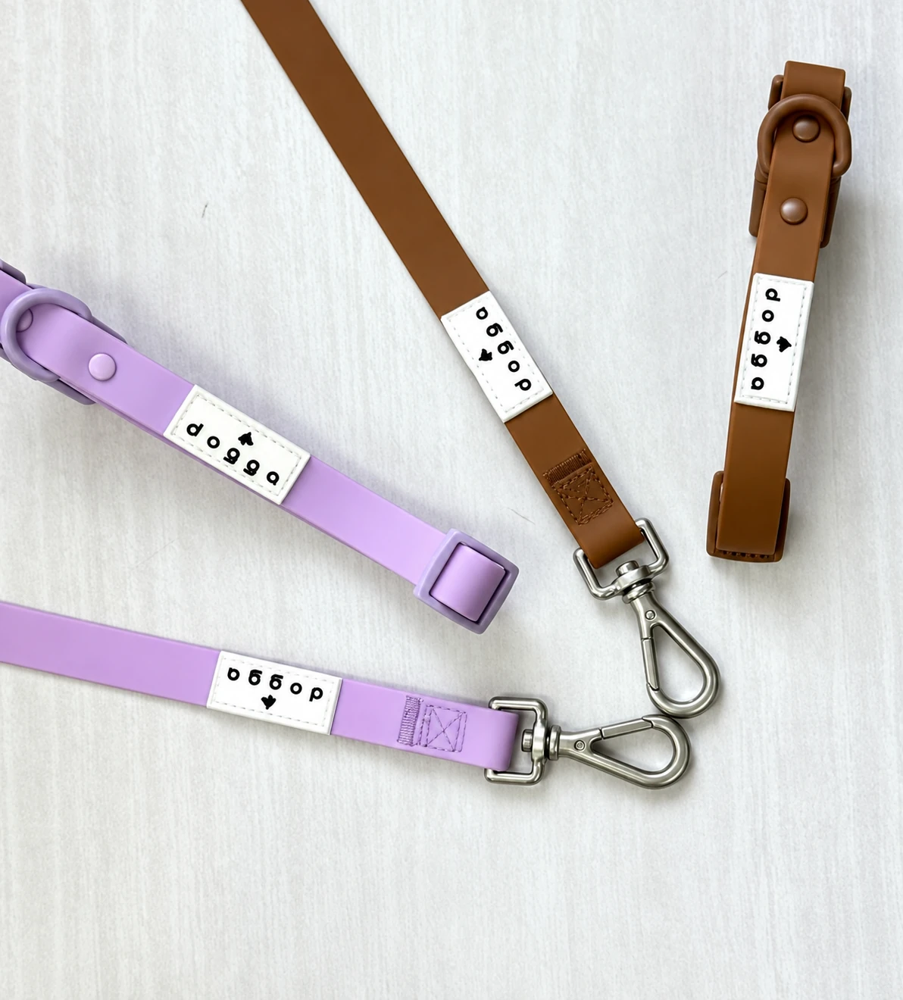

Logotipos / 01
DOGGA
Un logotipo que también vive en los accesorios de la marca.
01 / El logotipoDOGGA / Identidad

Para ver más
Brandbook
Próximamente, el documento completo de la marca.
Ver brandbook ↗Logotipos / 01
Un logotipo que también vive en los accesorios de la marca.

Para ver más
Próximamente, el documento completo de la marca.
Ver brandbook ↗